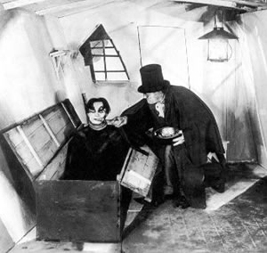
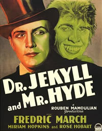
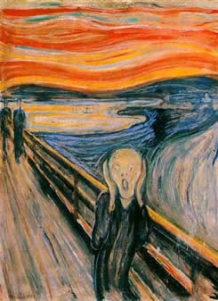

Como já nos disse Lotte H. Eisner
em seu livro definitivo A Tela Demoníaca,
o expressionista não vê, tem visões.
E tudo o que se venha a dizer posteriormente será
apenas a reafirmação desta verdade.
Em
1919 veio a nascer uma das maiores obras-primas cinematográficas
e também o primeiro (e segundo alguns, o único
genuíno) de um dos movimentos mais importantes da
história do cinema. Porém, ingênuos
são aqueles que acreditam que tal preciosidade surgiu
do nada, devido apenas à inspiração
de algum gênio artístico. O Gabinete do
Doutor Caligari é a manifestação
de toda um angústia já inerente ao povo alemão,
acentuada ainda mais pela total destruição
física, psicológica e moral que a Alemanha
sofreu ao fim da primeira grande guerra, somente um ano
antes.
Para a alma torturada da Alemanha, tais pesadelos
camuflados em filmes distorcidos pareciam o reflexo de uma
figura mutilada. Porém, há quem diga que os
delírios expressionistas sejam uma espécie
de superconscientização do próprio
ser, levando a um duelo interno para procurar o que seria
um equilíbrio entre os dois pólos; o bem e
o mal, o céu e a terra, o claro e o escuro.
Erroneamente o maior símbolo expressionista
é tomado como o seu único determinante; luzes
e sombras têm papel fundamental nesta linguagem, mas
não total. O expressionismo tem em sua razão
de ser o eterno conflito entre os opostos. Conflito este
herdado de movimentos artísticos anteriores: o barroco
e o gótico já apresentavam elementos antagônicos.
O barroco, nascido do choque entre duas
tradições históricas, a clássica
e a medieval é a representação dos
conflitos internos do homem diante da razão e da
fé, ambos aparentemente contraditórios. Juntamente
com o gótico estes movimentos apresentam elementos
que viriam a inspirar o que chamamos de expressionismo cinematográfico.
Elementos fundados no eterno confronto; enquanto no primeiro
o homem se via diante de um duelo entre o bem e o mal, para
finalmente ser resgatado pela luz, na manifestação
gótica ocorre justamente o contrário: pessimista,
ele é engolido pelas sombras, sem qualquer possibilidade
de redenção.
Ainda em 1886 R. L. Stevenson veio a escrever
o que seria talvez a maior obra do gênero, mesmo que
quase quarenta anos antes de seu surgimento: O Médico
e o Monstro. Talvez inconscientemente Stevenson atribuiu
a seus personagens valores semelhantes à teoria da
tríplice formação do homem de Freud.
O médico - Dr. Henry Jekyll - seria o Ego, representando
o melhor que o homem poderia ser: fino, intelectual e admirável.
O Monstro - Mister Edward Hyde - é tudo o que forma
o Id: uma criatura amoral, cuja falta de valores permite
uma vida desregrada e animalesca, cujos objetivos são
apenas a satisfação dos imediatos prazeres
sensoriais. E para transpor a barreira subconsciente que
separa os dois extremos é necessário um catalisador;
no caso, a poção; que destrua este obstáculo.
Porém, como nos mostra o trágico desfecho,
este é um território perigoso de explorar.
O
dilema de Jekyll é ao mesmo tempo o de toda uma geração
que viu a sua vida ruir. A normalidade em segundos deixa
de existir para dar lugar a um mundo onde tudo é
estranhamente familiar e ao mesmo tempo completamente diferente.
Jekyll e Hyde são a mesma pessoa,
a manifestação da natureza dúbia do
homem. Ao contrário do mito do Doppelganger, o "outro",
a contraparte infernal deixa de ser maniqueísta para
fazer parte do ser, sem que haja a possibilidade de negá-la.
O homem passa a se entender como nunca antes foi preciso,
tendo que enfrentar os seus demônios pessoais e, na
impossibilidade de destruí-los, passar a aceitá-los.
Infelizmente, Robert Wiene não conseguiu
repetir o êxito triunfal de seu "Caligari",
sendo logo reduzido a diretor de segunda ordem. Porém,
o trono ficou vago por pouco tempo, sendo logo substituído
pelos geniais (creio que no caso deles o título é
permitido, se não aquém do que merecem) Fritz
Lang e F. W. Murnau, diretores extraordinários que
souberam como poucos explorar a nova linguagem que surgia.
O
Grito
O termo "expressionismo" é
muitas vezes levianamente designado a todo e qualquer filme
alemão da época dita "clássica",
que abrange as décadas de 10, 20 e início
de 30. Torna-se então necessária a correção,
uma vez que os efeitos de claro-escuro já existiam
bem antes de O Gabinete do Doutor Caligari.
Foi
na Alemanha do início do século que o expressionismo
nasceu, ainda no terreno da literatura e da pintura, ancorado
em uma série de condições econômicas,
sociais e ideológicas favoráveis. Em confronto
com a nova realidade da sociedade européia pré-primeira
guerra, os jovens artistas germânicos rebelaram-se
contra o anacronismo dos valores e uma ascendente ordem
mundial em que predominavam o materialismo, a urbanização
e a prosperidade de uma burguesia emocionalmente estagnada.
Como um grito de protesto enraizado no desespero
do homem diante da falta de sentido do mundo contemporâneo
(claramente representado numa das obras primeiras do movimento:
O Grito de Edvard Munch, que, ainda em 1893 já
explorava a angústia de uma realidade interna maior
que a externa), o expressionismo refletiu uma nova noção
da realidade: desta vez o confronto não vinha somente
da sociedade opressora e sim de suas próprias percepções
interiores.
Na história das criações
nada surge espontaneamente; toda produção
é uma fusão de conhecimentos anteriores concebida
através uma nova sistematização e o
peculiar toque de brilhantismo característico dos
seres humanos. Da mesma forma que o renascimento é
uma releitura da cultura greco-romana de dez séculos
antes vista pela ideologia burguesa, o expressionismo cinematográfico
alemão é um amálgama de correntes artísticas
anteriores; o barroco e o gótico; da influência
visual do teatro de Max Reinhardt, da revolução
do pensamento moderno e do humilhante e devastador tratado
de Versailles pós-primeira guerra.
Foi em O Estudante de Praga, ainda
em 1913 que o cinema alemão exigiu o título
de obra de arte, abandonando os filmes medíocres
que tanto faziam sucesso na época para começar
a produzir cinema com status de genialidade.
Neste filme aparentemente o confronto interno
já se faz presente, com a história de um jovem
estudante que vende sua alma para o Diabo. Em busca de sucesso,
ele firma um acordo cedendo a sua sombra/reflexo (que segundo
supertições antigas seria a manifestação
da alma) para depois ser acusado de um crime cometido pela
própria, que seria o seu lado maligno. Após
diversas situações, ele finalmente se vê
diante de sua contraparte num duelo de vida ou morte sem
saber que, ao matar sua própria sombra estaria matando
a si mesmo; O confronto do homem consigo mesmo e a angústia
desta situação terminando de forma trágica
num dos simbolismos mais interessantes do cinema para o
suicídio.
Para os mais desavisados, O Estudante
de Praga (1913), O Golem (1914) e Homunculus
(1916) seriam filmes puramente expressionistas, com todos
os elementos da "fórmula": luzes e sombras,
deformidades/estilizações visuais e conflitos
interiores afetando o mundo externo. Porém, ainda
faltam elementos na equação. Nestes casos,
o processo de formação do cinema expressionista
ainda não está completo, pois podemos perceber
claramente que o conflito é derivado de um agente
externo, omitindo a responsabilidade do homem para consigo
mesmo: O Diabo em O Estudante de Praga, a sociedade
em O Golem e Deus em Homunculus.
Foi somente três anos depois que todas
as influências se cristalizaram no filme primeiro
de um dos movimentos de maior influência e importância
na história do cinema: O Gabinete do Doutor Caligari.
Filmografia
do Horror Expressionista
| Nome |
Ano |
| O
Gabinete do Doutor Caligari |
1919
|
| Torgus |
1920
|
| O
Golem |
1920
|
| A
Morte Cansada |
1921 |
| Nosferatu |
1922
|
|
O Anel Dos Nibelungos |
1923
|
| As
Mãos de Orlac |
1924
|
| O
Gabineta Das Figuras de Cera |
1924
|
| O
Estudante de Praga |
1926
|
| Fausto |
1926
|
| Alraune |
1928
|
| M,
o Vampiro de Dusseldorf |
1931
|
Por
Eduardo Moniz Vianna
Extraído
de www.bokadoinferno.hpg.ig.com.br